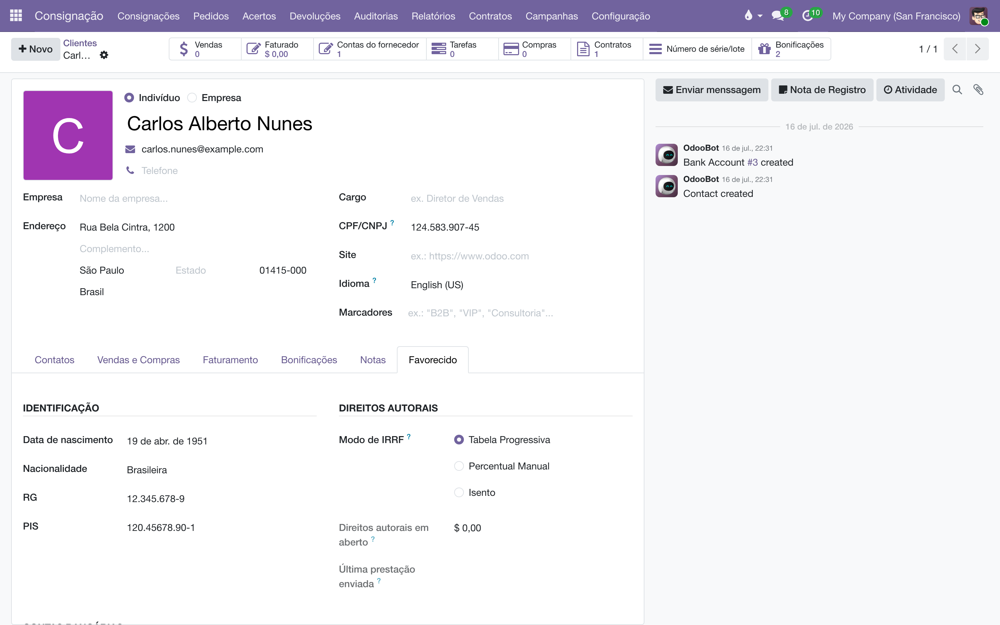
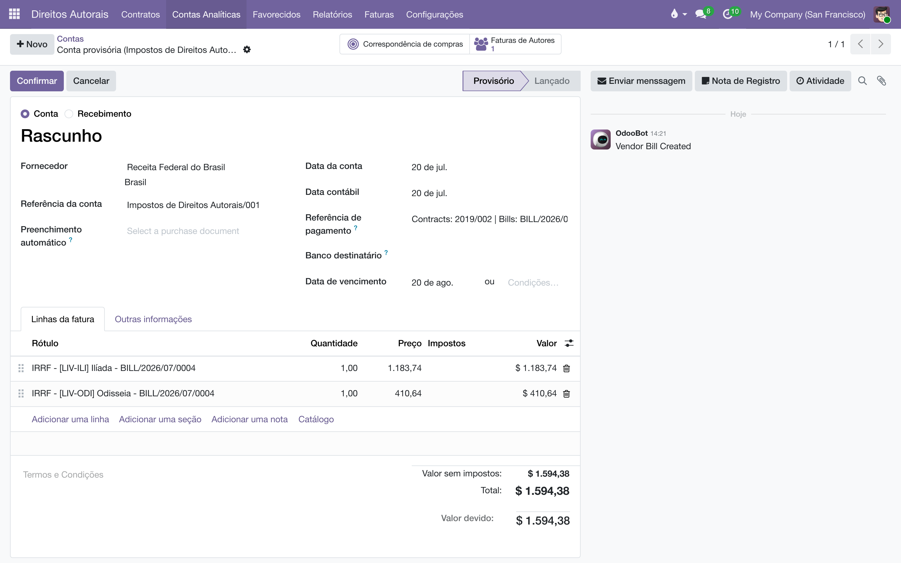

Retenha o imposto de renda na fonte de cada pagamento de direitos autorais — pela tabela progressiva oficial, com o redutor da Lei 15.270/2025 — e acumule tudo numa única fatura ao órgão arrecadador, pronta para o DARF.
Visão geral
Quando a editora paga direitos autorais a uma pessoa física, precisa reter o IRRF. Este módulo faz isso em cima das faturas geradas pelo Pagamento de royalties:
No momento em que a fatura do autor é gerada, o imposto é calculado e entra como uma linha negativa ("IRRF retido - …") — o autor recebe o líquido.
O valor retido de todos os autores vai se acumulando numa única fatura em rascunho, endereçada ao órgão arrecadador (por exemplo, a Receita Federal), com uma linha por obra e a numeração de lote "Impostos de Direitos Autorais/NNN".
A tabela do imposto é um cadastro editável: quando a lei mudar, o contador cria a tabela nova com a data de início de vigência, sem depender de atualização do sistema.
A Prestação de contas usa o mesmo motor: o extrato do autor mostra a dedução de IRRF calculada pela tabela vigente (ou pelo modo escolhido no cadastro do favorecido).
Configuração
A retenção é opcional e desligada por padrão: ela só acontece quando o órgão arrecadador e a conta de passivo estão configurados.
Em Órgão arrecadador, escolha o contato do governo que receberá a fatura acumulada do imposto (crie um contato "Receita Federal do Brasil", se ainda não houver).
Em Conta de passivo do IRRF, escolha a conta "IRRF a Recolher": ela recebe o valor no momento da retenção e é baixada quando o imposto é pago ao governo.
Se quiser, defina o Diário da fatura de imposto (um diário de compras; vazio usa o diário de compras padrão da empresa).
Em Dia de vencimento do imposto, informe o dia do mês seguinte em que o IRRF retido vence (o DARF) — padrão 20.
Salve. As opções são por empresa.
Manter a tabela do IRRF
O módulo já vem com a tabela de 2026. Quando a legislação mudar, cadastre a nova:
Acesse Direitos Autorais‣Configurações‣Tabelas de IRRF e clique em Novo.
Dê um Nome (ex.: "IRRF 2027") e informe Vigente a Partir de — a tabela vale para as faturas datadas desse dia em diante, até começar uma tabela mais recente.
Preencha Sem Retenção Até (renda mensal até a qual não há retenção nenhuma) e o Desconto Simplificado (valor fixo abatido da renda para formar a base de cálculo).
Na seção Redutor (Lei 15.270/2025), informe a Constante do Redutor (A), o Fator do Redutor (B) e Redutor Até — o redutor vale A − B × renda e se aplica às rendas até esse teto.
Em Faixas Progressivas, cadastre cada faixa com Base Até (0 = sem limite, a última faixa), Alíquota (%) e Parcela a Deduzir.
Salve. A tabela antiga permanece no histórico — o sistema sempre escolhe a mais recente já vigente na data da fatura.
Os valores de 2026 que acompanham o módulo:
Tabela IRRF 2026 (Lei 15.270/2025)
Base de cálculo até
Alíquota
Parcela a deduzir
R$ 2.428,80
0%
—
R$ 2.826,65
7,5%
R$ 182,16
R$ 3.751,05
15%
R$ 394,16
R$ 4.664,68
22,5%
R$ 675,49
Acima (sem limite)
27,5%
R$ 908,73
Parâmetro
Valor 2026
Sem retenção até (renda mensal)
R$ 5.000,00
Desconto simplificado
R$ 607,20
Redutor
978,62 − 0,133145 × renda (nunca negativo)
Redutor aplicado até
renda de R$ 7.350,00
Exemplo
Pagamento de R$ 6.000,00 de direitos a um autor pessoa física em 2026:
Acima de R$ 5.000,00 → há retenção.
Base de cálculo: 6.000,00 − 607,20 (desconto simplificado) = 5.392,80.
IRRF retido: 574,29 − 179,75 = R$ 394,54. O autor recebe R$ 5.605,46.
Já um pagamento de R$ 10.000,00 fica em 9.392,80 × 27,5% − 908,73 = R$ 1.674,29, sem redutor (acima do teto de R$ 7.350,00). E um de R$ 4.000,00 não retém nada.
Nota
O resultado nunca é negativo: se a conta der abaixo de zero (acontece logo acima do limite de isenção), a retenção é simplesmente zero.
Escolher o modo de retenção de cada favorecido
Nem todo favorecido é tributado igual — uma pessoa jurídica, por exemplo, não sofre essa retenção. No cadastro do contato, aba Favorecido:
Abra o favorecido em Direitos Autorais‣Favorecidos.
Na aba Favorecido, escolha o Modo de IRRF:
Tabela Progressiva (padrão) — usa a tabela vigente, com desconto simplificado e redutor.
Percentual Manual — aplica o percentual fixo do campo IRRF (%), que aparece quando este modo é escolhido.
Isento — não retém nada (o caso típico das empresas).
Salve. O modo vale tanto para a retenção na fatura quanto para a dedução mostrada na prestação de contas.

O modo de IRRF no cadastro do favorecido: tabela, percentual fixo ou isenção.
O que acontece a cada pagamento
Gere as faturas dos autores normalmente (Ação ‣ Gerar Faturas de Royalties no contrato — veja o manual de Pagamento de royalties). Se a retenção estiver configurada e houver imposto a reter, a fatura já nasce com a linha negativa "IRRF retido - autor", lançada na conta "IRRF a Recolher": a despesa fica pelo valor bruto e o total a pagar, pelo líquido.
Em paralelo, o valor retido entra na fatura acumuladora do imposto: uma fatura de fornecedor em rascunho, endereçada ao Órgão arrecadador, com uma linha por obra ("IRRF - obra - fatura do autor"). Se ainda não existe uma acumuladora em rascunho, o sistema cria uma, com o número de lote na referência ("Impostos de Direitos Autorais/001") e vencimento no Dia de vencimento do imposto do mês seguinte.
O campo de referência de pagamento da acumuladora lista os contratos e as faturas de origem, e é atualizado sozinho conforme faturas entram e saem do lote.
Ao confirmar a fatura do autor, os rótulos das linhas do lote são atualizados com o número definitivo dela.
No vencimento, confirme e pague a fatura acumuladora — isso baixa o passivo "IRRF a Recolher". A partir daí, as próximas retenções abrem um lote novo.
Dois botões inteligentes ligam as pontas: na fatura do autor, IRRF – Fatura de Imposto abre o lote que carrega a retenção dela; na fatura do imposto, Faturas de Autores abre as faturas de origem.

O lote do imposto: uma linha por obra, referência com o número do lote e as origens listadas na referência de pagamento.
Regras e guardas
Sem configuração, sem retenção. Enquanto o órgão arrecadador ou a conta de passivo não estiverem definidos, as faturas dos autores saem pelo valor bruto, sem linha de IRRF.
Cancelou ou excluiu a fatura do autor? A parcela dela é removida automaticamente do lote em rascunho. Se o lote já foi confirmado, o sistema não mexe nele — registra um aviso no histórico do lote pedindo ajuste manual do contador.
Nada de duplicar no lote: regenerar ou reconfirmar uma fatura de autor substitui as linhas dela no lote em vez de somar de novo.
Rateio por obra: quando a fatura do autor tem várias obras, o imposto é dividido proporcionalmente ao valor de cada uma (a última linha absorve a sobra de arredondamento), para o lote fechar no centavo.
Valor a pagar zero ou negativo nunca retém, seja qual for o modo.
Perguntas frequentes
A fatura do autor saiu sem a linha de IRRF. Ou a retenção não está configurada (órgão + conta), ou o valor ficou abaixo do limite de isenção da tabela, ou o favorecido está no modo Isento.
O IRRF do extrato bate com o da fatura? Sim — os dois usam o mesmo cálculo e o mesmo modo do favorecido. No modo Percentual Manual, ambos aplicam o percentual fixo do cadastro.
Posso corrigir a tabela vigente? Pode editá-la em Direitos Autorais‣Configurações‣Tabelas de IRRF, mas a correção só afeta cálculos futuros — retenções já lançadas não são refeitas.
De onde vem o "mês seguinte" do vencimento? O IRRF retido num mês é recolhido no mês seguinte; o lote já nasce com o vencimento no dia configurado (se o mês não tiver esse dia, usa o último dia do mês).